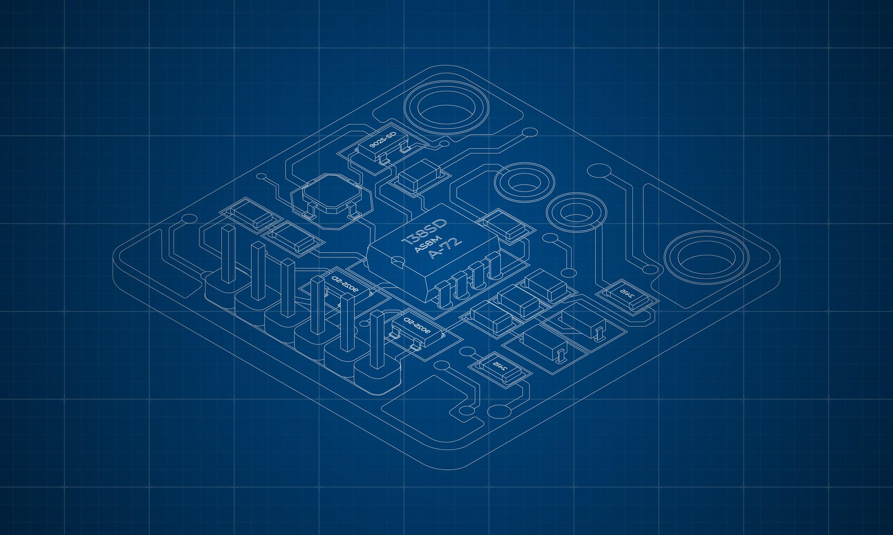

Raphael BouskilaQA Engineer Student | Practical Electrical Engineering Graduate About MeHello! My name is Raphael Bouskila. I am currently learning web development and have a degree in Practical Electrical Engineering. I am fluent in Hebrew, English, and Spanish, and I am currently studying to become a QA Engineer. Professional SummaryI made aliyah from the United States of America 10 years ago and have been working for the city of Harish for the last 5 years while completing my degree in Practical Electrical Engineering. I am a hard worker, a fast learner, and a team player. Education
Skills
ContactEmail: RaphaelBouskila148@gmail.com |
 |